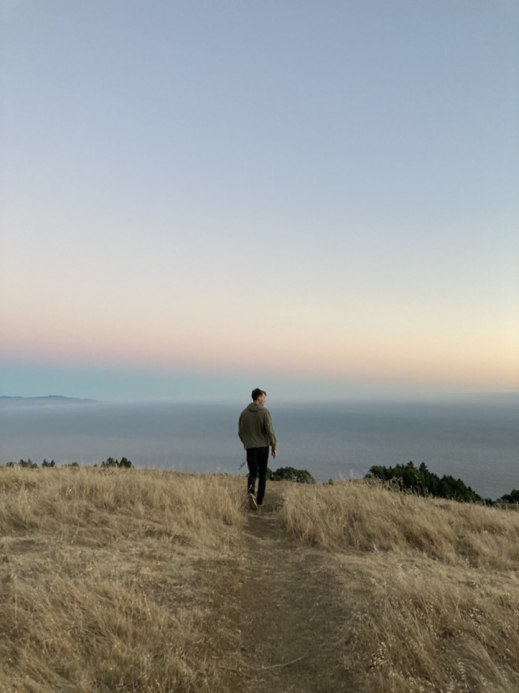

About the Artist
I am a classically trained pianist since the age of 6. With piano always being my main focus, during high school I took a liking for the guitar. Since then, I have collaborated with roommates and friends on several projects including personal compositions as covers. I come from a family of 8 in the Bay Area, California. Currently, I live in Provo, Utah while I attend Brigham Young University studying information systems. I hope you enjoy this collection of my musical journey.
